复习题A · 1
- 如图, 该几何体是由哪个平面图形旋转得到的？画出其余平面图形旋转得到的几何体.
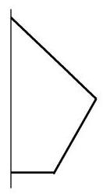
(A)
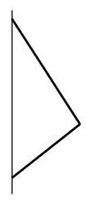
(B)
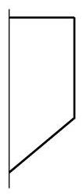
(C)
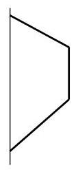
(D)
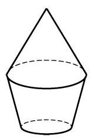
(第 1 题)
学生阅读版 / 沪教版高中数学
必修第三册
第11章简单几何体 · 保留教材主线与原题
教材与正式教参整合
(1)多面体:由三角形或平面多边形围成的封闭几何体称为多面体.
(2)旋转体:一个平面封闭图形绕其所在平面上的一条直线在空间旋转一周所得到的空间封闭几何体称为旋转体.
(1)柱体(包括棱柱和圆柱)，其中棱柱是多面体，而圆柱是旋转体.
(2)锥体(包括棱锥和圆锥)，其中棱锥是多面体，而圆锥是旋转体.
(3)球，它是一个旋转体.
(1)柱体的体积和表面积:
柱体的体积: .
直棱柱(侧棱垂直于底面的棱柱)的表面积: .
圆柱的表面积: .
其中， 、 与 分别是柱体的底面积、高与底面周长， 是圆柱的底面半径.
(2)锥体的体积和表面积:
锥体的体积: .
正棱锥(底面为正三角形或正多边形且高通过底面中心的棱锥)的表面积: .
圆锥的表面积: .
其中, 与 分别是锥体的底面积、高与底面周长, 是正三棱锥的斜高, 与 是圆锥的底半径和母线长.
(3)球的体积和表面积:
球的体积: .
球面面积: .
其中, 是球的半径.

(A)

(B)

(C)

(D)

(第 1 题)
(1)以直角三角形的一直角边为轴旋转所形成的旋转体是圆锥；
(2)以直角梯形的一腰为轴旋转所形成的旋转体是圆台；
(3)圆柱、圆锥、圆台都有两个底面；
(4)圆锥的侧面展开图为扇形，这个扇形所在圆的半径等于圆锥底面圆的半径.
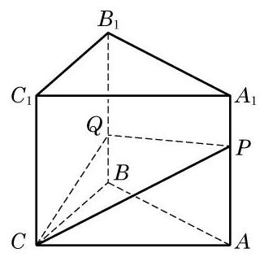
(第 8 题)
(1)求三棱锥 的体积；
(2)求异面直线 与 所成角的大小.
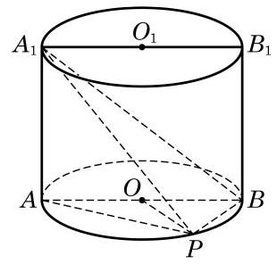
(第 8 题)
(1)求证: ；
(2)若圆柱与三棱锥 的体积的比等于 ，求直线 与平面 所成角的大小.
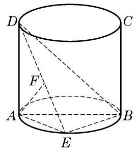
(第 9 题)
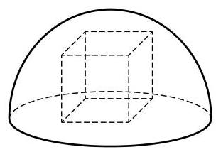
(第 10 题)
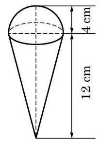
(第 2 题)
(1)求 关于 的函数表达式；
(2)当 为何值时,容器的容积 最大? 并求出 的最大值.
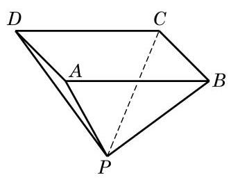
(第 3 题)
(1)试把容器罩的表面积 表示为 的函数;
(2)试把容器罩的体积 表示为 的函数.
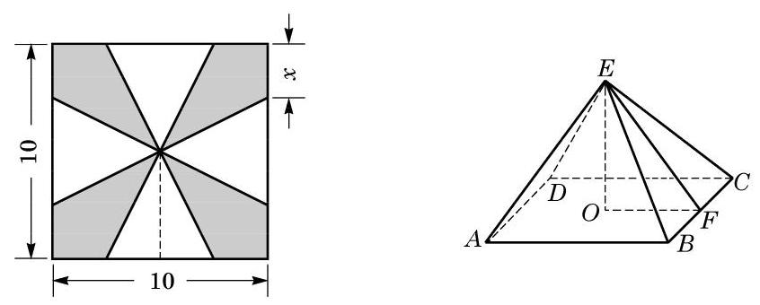
(第 4 题)